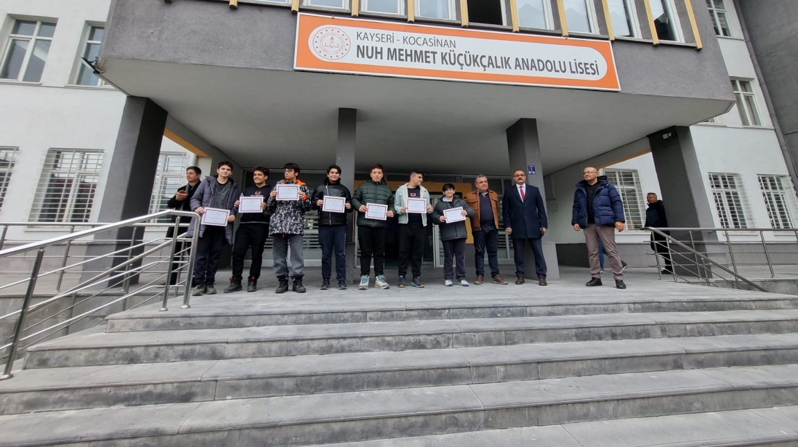
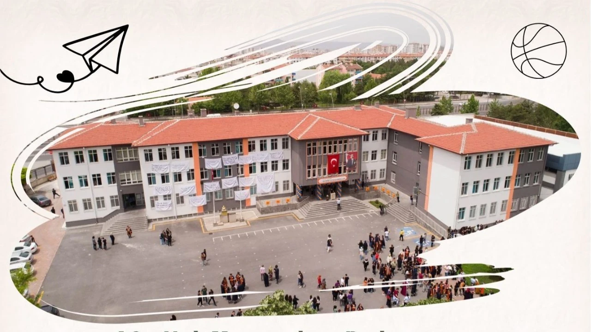

Hoş geldin! Bu site modern neon tasarımıyla hazırlanmıştır.
Nuh Mehmet Küçükçalık Anadolu Lisesi, öğrencilerine kaliteli eğitim sunan ve onları geleceğe hazırlayan önemli bir eğitim kurumudur.


Email: ornek@mail.com